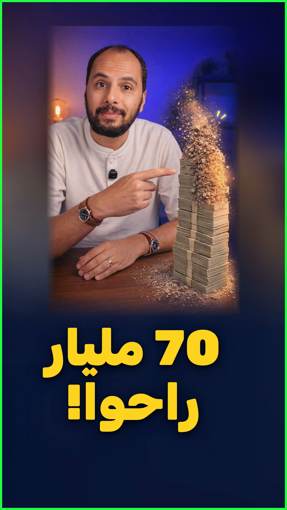

استثمار
خسر حوالي 70 مليار.. ورهان صغير رجّعه
Masayoshi Son كان لفترة قصيرة أغنى راجل في العالم، وبعدين ثروته على الورق نزلت حوالي 70 مليار دولار لما فقاعة الإنترنت فرقعت. وقبل الانهيار بحوالي شهر، SoftBank كانت حطت 20 مليون دولار في شركة صينية صغيرة اسمها Alibaba.

شغّل الفيديوMasayoshi Son (ماسايوشي سون) هو اللي أسس SoftBank (سوفت بنك).3 وفي عز فقاعة الإنترنت كان لفترة قصيرة أغنى راجل في العالم، قبل ما البورصة تقع سنة 2000.1
والحكاية فيها رقمين بعاد عن بعض جدًا: خسارة ضخمة، ورهان صغير على شركة صينية ناشئة في التجارة الإلكترونية.4 الاتنين حصلوا في نفس الفترة تقريبًا، بس كل واحد فيهم بان حجمه الحقيقي في وقت مختلف.
إزاي Masayoshi Son خسر حوالي 70 مليار دولار؟
لما الفقاعة فرقعت سنة 2000، ثروة Son على الورق نزلت حوالي 70 مليار دولار حسب عمود رأي في The Japan Times.2 ومصادر تانية بتحط الرقم عند أكتر من 59 مليار دولار.1 يعني الرقم نفسه مختلف عليه، بس المصدرين بيوصفوا خسارة ضخمة مع انفجار الفقاعة.
وSoftBank نفسها، حسب تقدير منشور في مصدر ثانوي، خسرت تقريبًا كل قيمتها في البورصة.7 لو الحكاية وقفت هنا، كانت هتبقى حكاية راجل كان فوق قوي ووقع. بس فيه قرار اتاخد قبل الوقعة دي بشوية.
إزاي اتاخد قرار الـ20 مليون دولار في Alibaba؟
قبل الانهيار بحوالي شهر، SoftBank حطت 20 مليون دولار في Alibaba (علي بابا)، وكانت وقتها شركة صينية ناشئة في التجارة الإلكترونية، وما كانش حد تقريبًا يعرفها.4
طيب القرار ده اتاخد إزاي؟ حسب رواية نشرتها Reuters وقت الطرح، Son سمع Jack Ma (جاك ما) حوالي خمس دقايق، وبعدها مدّ الاجتماع وقرر يستثمر 2 مليار ين، يعني حوالي 20 مليون دولار بسعر وقتها.6 ودي رواية صحفية من غير مصدر مسمّى، مش محضر اجتماع متسجّل.
SoftBank عملت إيه بالحصة دي بعد كده؟
SoftBank ما خرجتش من Alibaba قبل الطرح، فضلت ماسكة الحصة وزوّدت عليها.5 وحسب Bloomberg، حصة الـ34% اللي وصلت لها SoftBank جت من الاستثمار الأولاني ومن استثمارات بعده، مش من الـ20 مليون لوحدهم.5
وقبل الطرح، Bloomberg قدّرت حصة SoftBank بـ58 مليار دولار، على أساس تقييمات محللين لـAlibaba بحوالي 168 مليار دولار.5
الحصة اللي ابتدت بالـ20 مليون بقت تساوي كام؟
في سبتمبر 2014، Alibaba نزلت البورصة في نيويورك، في طرح كان رايح يقفل عند حوالي 25 مليار دولار، وده خلّاه أكبر طرح في التاريخ لحد وقتها. والسهم اتسعّر بـ68 دولار.8
وفي آخر أول يوم، السهم قفل على 93.89 دولار. وعلى السعر ده، حصة SoftBank، اللي بقت حوالي 32% بعد الطرح، وصلت قيمتها تقريبًا 75 مليار دولار.9
وخد بالك إن الرقم ده قيمة حصة SoftBank، مش ثروة Son الشخصية. أما Son نفسه، فمع الطلوع اللي سبق الطرح بقى أغنى راجل في اليابان، بثروة 16.6 مليار دولار حسب بيانات Bloomberg في سبتمبر 2014.3
إيه اللي فرّق في حكاية Masayoshi Son؟
عمود رأي في The Japan Times وصف Son بإنه راجل التطرّفات: أنجح رهان في التاريخ مع Alibaba، وكمان خسارة حوالي 70 مليار دولار، وبعدين Vision Fund بـ100 مليار دولار، اللي جمعه سنة 2017.2
وفي قراءتي أنا، اللي فرّق في نتيجة Son إنه فضل في اللعبة مدة كفاية لحد ما رهان واحد صح جاب نتيجته. ودي قراءة للحكاية، مش نصيحة استثمار.
ودلوقتي قولّي في التعليقات على الفيديو: إيه أصغر قرار أخدته، وطلع أكبر من توقعك؟
أسئلة شائعة
Masayoshi Son خسر كام في فقاعة الإنترنت؟
حسب عمود رأي في The Japan Times، ثروته على الورق نزلت حوالي 70 مليار دولار لما الفقاعة فرقعت سنة 2000. ومصادر تانية بتحط الرقم عند أكتر من 59 مليار دولار.
هل Son قرر يستثمر في Alibaba بعد كام دقيقة بس؟
ده اللي حكته Reuters وقت الطرح: إنه سمع Jack Ma حوالي خمس دقايق، وبعدها مدّ الاجتماع وقرر يستثمر. بس دي رواية صحفية من غير مصدر مسمّى، مش سجل موثّق للاجتماع.
حصة SoftBank في Alibaba بقت تساوي كام؟
على سعر قفل أول يوم بعد الطرح، الحصة اللي ابتدت بالـ20 مليون دولار، واللي SoftBank زوّدت عليها بعد كده، وصلت قيمتها تقريبًا 75 مليار دولار.
المصادر
- Wikipedia · accessed 2026 Masayoshi Son
- The Japan Times · 2024-10-30 "Masayoshi Son and the AI bubble"; (opinion column by Parmy Olson, Bloomberg Opinion, republished)
- Fortune · 2014-09-17 "Alibaba's IPO has made Masayoshi Son Japan's richest man";
- Fortune · 2025-04-01 "AI and Trump 2.0 propel SoftBank CEO Masayoshi Son back into the spotlight";
- Bloomberg · 2014-05-07 "Masayoshi Son's $58 Billion Payday on Alibaba";
- Shanghai Daily (archive of a Reuters story, 28 Aug 2014: "Mega-IPO to rekindle the 'bromance' behind Alibaba's rise";) · 2014 "IPO rekindles 'bromance' behind Alibaba's rise";
- Celebrity Net Worth (secondary) · 2026-06-02 (first published 2013) "Meet the man who lost the most money in human history";
- Global Venturing · 2014-09-19 "Big Deal: Alibaba goes public in record IPO";
- Business Standard (Reuters Breakingviews) · 2014-09-22 "Soft-value: Alibaba IPO highlights SoftBank's value dilemma";
الصور
- Photo: Jack Ma at the 31st ISC Symposium (2001) — St. Gallen Symposium · CC BY-SA 4.0 https://commons.wikimedia.org/wiki/File:31._ISC-Symposium-Jack_Ma-HSGN_028-01561.jpg
- Photo: Masayoshi Son on July 11, 2008 — Masaru Kamikura · CC BY 2.0 (edited: cutout) https://commons.wikimedia.org/wiki/File:Masayoshi_Son_(孫正義)_on_July_11,_2008.jpg

_on_July_11,_2008.jpg){kind=link}
الصور
- AI caricature (a clearly stylised illustration): Masayoshi Son — an AI caricature (clearly stylised; likeness reference: the CC BY 2.0 2008 photo by Masaru Kamikura) (Nano Banana Pro)
- AI-generated image: a 2000 office desk, a CRT monitor with a plunging red chart (AI) (Nano Banana Pro)
- AI-generated image: a brass stock-exchange bell with falling confetti (AI) (Nano Banana Pro)
المؤثرات الصوتية
- Sound: «Tv static render.wav» by Warrick_Lendon — CC0 1.0 — https://freesound.org/people/Warrick_Lendon/sounds/542635
- Sound: impact-punch — CC0-1.0 — https://kenney.nl/assets/impact-sounds
- Sound: «VHS Glitch» by Sassaby — CC0 1.0 — https://freesound.org/people/Sassaby/sounds/264935
- Sound: tick-1 — CC0-1.0 — https://kenney.nl/assets/interface-sounds
- Sound: «Glitch 01» by JacksonMiller0 — CC0 1.0 — https://freesound.org/people/JacksonMiller0/sounds/237607